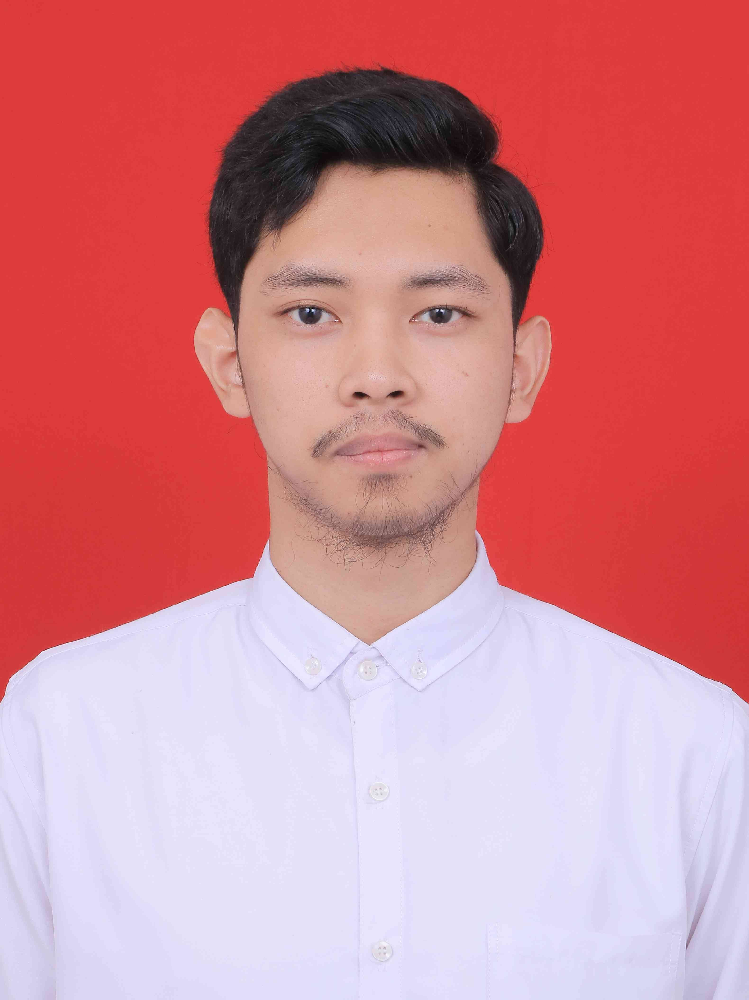

Curriculum Vitae
Brief Introduction
I am a passionate IT fresh graduate, eager to develop my career in full-stack web development, and open to learning new things related to IT & Computer Science.
Education
Banjarmasin 4 Vocational High School (2016-2018)
GPA: 83 out of 100
Banjarmasin State Polytechnic (2019-2022)
GPA: 3.63 out of 4.00
Work Experience
Digital Marketer - IndiHome Banjarmasin
- Conducted social media target audiences research.
- Designing posters using design apps.
- Conducting offline sales with the team, and online sales with personal account.
- Providing information to potential customers about the product.
IT & Administrative Staff - Imam Syafi'i Banjarmasin Mosque
- Planning, built, managed and developed the mosque's social media accounts, website and databases.
- Documented the mosque's activities and helped create reports in the form of printed writing, website articles, or social media contents.
- Assisted the mosque's administration with Google Workspace, designing posters with Canva, and do live stream with OBS.
Skills
- C1 English
- Ms. Office & Google Workspace
- Live Streaming Softwares
- Web Fullstack Development
- Social Media Ads & Planning
- Canva Design
Contact Me